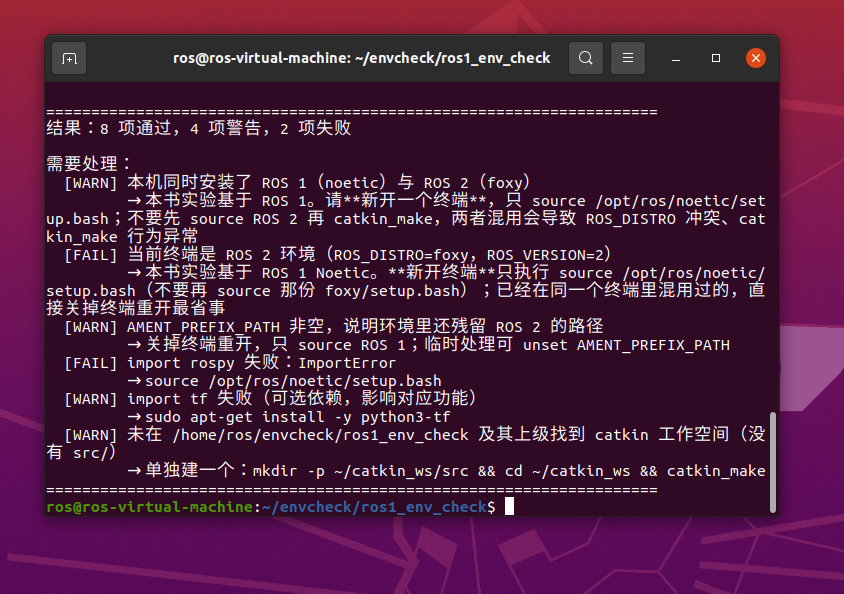
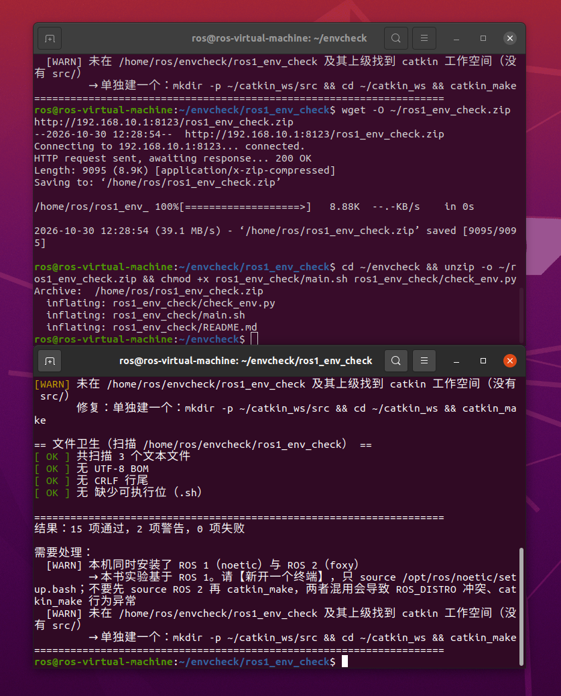

ROS 1 环境自检与常见问题排查
所属模块：
src/chap2/ros1_env_check依赖：Python 3.6+（不需要 ROS 也能运行） 适用：Ubuntu 20.04 + ROS Noetic；同样适用于 ROS 1 与 ROS 2 共存的机器
1. 为什么需要环境自检
跟着本书跑模块时，"跑不起来"的原因里，环境问题和代码问题大约各占一半， 但环境问题的报错往往指向别处：
| 现象 | 看起来像 | 实际原因 |
|---|---|---|
ModuleNotFoundError: No module named 'rospy' |
代码缺依赖 | 当前终端没 source /opt/ros/noetic/setup.bash |
ImportError: No module named 'lateral_control_benchmark' |
包没装好 | 没 source devel/setup.bash，或包未加 catkin_python_setup() |
RLException: ... is neither a launch file in package ... |
launch 文件写错 | 包没编译成功，devel 里没有该包 |
bash: ./run.sh: /bin/bash^M: bad interpreter |
脚本内容有问题 | 文件是 CRLF 行尾（从 Windows 拷过来） |
mkdocs.yml 报奇怪的 YAML 解析错误 |
配置写错 | 文件开头有不可见的 UTF-8 BOM |
catkin_make 在别的包上失败 |
本模块有问题 | 工作空间里有其他包缺依赖（如 turtlebot3_gazebo 缺 sdformat-9.8） |
ros1_env_check 把上述检查集中到一处，一次性告诉你缺什么、怎么修。
2. 快速开始
cd src/chap2/ros1_env_check
# 检查当前终端与环境
./main.sh
# 额外扫描某个目录的文件卫生（BOM / CRLF / 可执行位）
python3 check_env.py --scan .
# 只按文件检查计退出码（没装 ROS 的 CI job 用它做文档 lint）
python3 check_env.py --scan docs/ --scan-only
# 只把问题打出来
python3 check_env.py --quiet
# 把警告也算失败（适合放进 CI）
python3 check_env.py --strict
输出形如：
== ROS 环境 ==
[ OK ] /opt/ros 下已安装：foxy、noetic
[WARN] 本机同时安装了 ROS 1（noetic）与 ROS 2（foxy）
修复：本书实验基于 ROS 1。请**新开一个终端**，只 source /opt/ros/noetic/setup.bash；
不要先 source ROS 2 再 catkin_make，两者混用会导致 ROS_DISTRO 冲突、catkin_make 行为异常
[ OK ] 当前终端为 ROS 1 环境：ROS_DISTRO=noetic
[ OK ] rosversion -d = noetic
== Python 与依赖 ==
[ OK ] Python 3.8.10（满足 >= 3.6）
[ OK ] import rospy 正常
[ OK ] import numpy 正常
== 工作空间 ==
[ OK ] 工作空间根目录：/home/user/catkin_ws
[ OK ] 存在 src/
[ OK ] devel 的 Python 包路径已生效（source devel/setup.bash 已执行）
退出码：0 表示通过，1 表示有 FAIL（加 --strict 时 WARN 也算失败），
2 表示参数用法错误。
--scan-only：把文件检查与环境检查的退出码分开
不带 --scan-only 时，退出码把环境检查也算进去。所以在没装 ROS 的 CI job 里
跑 check_env.py --scan docs/ 会一直红——失败项是 ROS_DISTRO 未设置、import rospy 失败，
与文件完全无关。加上 --scan-only 就只跑文件卫生、只按它计退出码：
干净目录即使没 source ROS 也返回 0，而一旦真有 BOM / CRLF 仍然返回 1。
3. ROS 1 与 ROS 2 共存时最容易踩的坑
Ubuntu 20.04 上常见 Noetic + Foxy 双版本共存。这时 source 错一个就会出问题：
# ❌ 错误：同一个终端里先 source 了 ROS 2
source /opt/ros/foxy/setup.bash
source /opt/ros/noetic/setup.bash # 后 source 也清不掉已混入的路径
cd ~/catkin_ws && catkin_make
典型报错：
ROS_DISTRO was set to 'foxy' before. Please make sure that the environment does not mix paths
后果是 catkin_make 行为异常、rospy 导入失败、节点启动即退出。
正确做法：关掉终端重开，只 source ROS 1：
# ✅ 正确：干净终端里只 source ROS 1
source /opt/ros/noetic/setup.bash
cd ~/catkin_ws
catkin_make
source devel/setup.bash
需要切回 ROS 2 做别的实验时，再开一个终端，不要试图在同一个终端里来回切换。
自检脚本会检查 ROS_DISTRO、ROS_VERSION、AMENT_PREFIX_PATH、COLCON_PREFIX_PATH，
把"混用"这个状态直接指出来。
同时装了 ROS 2 时，
$HOME/.bashrc里若写了source /opt/ros/foxy/setup.bash， 每开一个新终端都会自动加载。做本书实验前建议先注释掉那一行，用完再打开。
4. 三类文件卫生问题
--scan 会检查 BOM、CRLF 与可执行位。这三类问题都源于 Windows 与 Linux 之间来回拷文件，
在课程作业里非常常见。
4.1 UTF-8 BOM
BOM 是文件最前面的三个字节 EF BB BF，多数编辑器把它显示成不可见字符。
- 危害：
mkdocs.yml、launch文件、shell 脚本开头的 BOM 会引发难以定位的解析错误； 今天已有多位同学的 PR 因为mkdocs.yml带 BOM 被打回。 - 修复：用编辑器另存为「UTF-8 无 BOM」。命令行可用：
# 去掉单个文件的 BOM（sed 会原地改写，先备份）
sed -i '1s/^\xEF\xBB\xBF//' mkdocs.yml
# 批量检查哪些文件带 BOM
grep -rlI $'\xEF\xBB\xBF' docs src | head
4.2 CRLF 行尾
- 危害：shell 脚本会报
/bin/bash^M: bad interpreter；Python 部分场景会报SyntaxError； git 里会出现整文件的"伪修改"。 - 修复：
# 递归转成 LF（先确认没有需要保留 CRLF 的文件）
find . -type f \( -name '*.sh' -o -name '*.py' -o -name '*.md' \) -exec sed -i 's/\r$//' {} +
仓库里也可以统一设置：git config core.autocrlf false，然后重新检出。
4.3 脚本缺少可执行位
- 危害：
roslaunch与直接执行都要求脚本可执行，否则报找不到可执行文件。 - 修复：
chmod +x run.sh
# 注意：Windows 上无法保存该权限位，需要用 git 显式记录
git update-index --chmod=+x run.sh
5. 检查项清单
| 分组 | 检查内容 | 失败后果 |
|---|---|---|
| ROS 环境 | ROS_DISTRO、ROS_VERSION、/opt/ros 已装版本、rosversion、ROS_MASTER_URI |
任何 ROS 命令都不可用 |
| ROS 2 残留 | AMENT_PREFIX_PATH、COLCON_PREFIX_PATH |
catkin_make 行为异常 |
| Python | 版本 ≥ 3.6，rospy、numpy 必装，yaml/matplotlib/catkin_pkg/tf 可选 |
运行期才报错 |
| 工作空间 | 含 src/ 的工作空间根、build/、devel/、devel 是否在 sys.path、包数量 |
roslaunch 找不到包 |
| 文件卫生 | BOM、CRLF、.sh 可执行位 |
脚本无法执行或解析失败 |
6. 运行效果
在 Ubuntu 20.04 + Noetic 与 Foxy 共存的虚拟机上实测。
6.1 终端里选错版本时（ROS_DISTRO=foxy）
[WARN] 本机同时安装了 ROS 1（noetic）与 ROS 2（foxy）
[FAIL] 当前终端是 ROS 2 环境（ROS_DISTRO=foxy，ROS_VERSION=2）
→ 本书实验基于 ROS 1 Noetic。请【新开终端】只执行 source /opt/ros/noetic/setup.bash
[WARN] AMENT_PREFIX_PATH 非空，说明环境里还残留 ROS 2 的路径
[FAIL] import rospy 失败：ImportError

图 1 两种 ROS 都装了、但当前终端 source 的是 Foxy 时的输出。脚本没有笼统地报"ROS 不可用"，
而是明确指出「本机同时装了 noetic 与 foxy」「当前终端是 ROS 2 环境」，
并给出切回 ROS 1 的具体命令。这正是 ROS_DISTRO was set to 'noetic' before 这类警告的根源。
6.2 切到干净终端后（ROS_DISTRO=noetic）
== 文件卫生（扫描 /home/ros/envcheck/ros1_env_check） ==
[ OK ] 共扫描 3 个文本文件
[ OK ] 无 UTF-8 BOM
[ OK ] 无 CRLF 行尾
[ OK ] 无缺少可执行位（.sh）
结果：15 项通过，2 项警告，0 项失败

图 2 新开终端并 source /opt/ros/noetic/setup.bash 后重跑，0 项失败：
rospy 可导入、rosversion 正常、BOM / CRLF / 可执行位三项文件卫生检查全部通过。
剩下两条 WARN 都不是缺陷：一条是"本机同时装了 ROS 1 与 ROS 2"（环境事实，
保留它是为了提醒别混用），另一条是"当前目录不在 catkin 工作空间内"——
因为示例是把模块解压到 ~/envcheck 单独运行；放进 ~/catkin_ws/src 后该项会变成 OK。
7. 几个容易踩的判定细节
自检脚本里有两处判断"看上去能跑通、其实会给出错误结论"，这里单独说明。
7.1 --scan 的路径必须存在
早期版本里 --scan 传一个不存在的目录会静默通过：os.walk 什么都不产出，
三项检查于是全部显示 OK —— CI 里路径写错也全绿，这是最危险的一类假阴性。
现在会直接报 FAIL 并退出码 1：
[FAIL] 扫描路径不存在：/path/typo
修复：检查 --scan 后面的路径；相对路径是相对当前目录解析的
同理，传进来的是文件而不是目录时也会明确拒绝；目录存在但没扫到任何文本文件时给 WARN。
7.2 仓库源码树不是 catkin 工作空间
仓库根目录下也有 src/，所以"有 src/ 就当工作空间"这条判断会把源码树误判成工作空间，
进而建议你 catkin_make —— 而这会在仓库里生成 build/、devel/，
正是提交指引明确不允许提交的目录（很多人被这条坑过）。
现在判定工作空间时，除了 src/ 还要求 catkin 自己的标记之一：
.catkin_workspace（catkin_make 首次运行后生成）、devel/、build/。
在源码树里运行时给出的是正确做法：
[WARN] /path/to/ros2 下有 src/，但没有 catkin 标记（.catkin_workspace / devel / build），
看起来是源码树而不是工作空间
修复：不要在这里直接 catkin_make（会生成 build/、devel/）。
正确做法：mkdir -p ~/catkin_ws/src && cd ~/catkin_ws/src &&
ln -s <本仓库路径>/src/<模块> . && cd ~/catkin_ws && catkin_make
7.3 core.autocrlf=true 时会跳过 CRLF 检查
Windows 克隆机常把 core.autocrlf 设成 true，此时工作区里所有文本文件都是 CRLF，
但提交进仓库后会被自动转成 LF。不了解这一点，--scan 会把正常文件全部报成"CRLF 问题"。
脚本检测到该配置后改为跳过这一项并说明原因，而不是制造一堆假阳性：
[ OK ] 跳过 CRLF 检查：git 配置 core.autocrlf=true，工作区为 CRLF 是正常的（提交后自动转 LF）
要真正检查仓库里的行尾，先 git config core.autocrlf false 再重新检出。
8. 已知限制
- 可执行位检查只在 Linux/macOS 生效。Windows 没有 POSIX 权限位，
os.access的X_OK在 Windows 上只检查文件是否存在，会产生假阴性，因此脚本在 Windows 上显式跳过该项。 - 只在
/opt/ros下查找已安装发行版。源码编译或装在自定义路径的 ROS 不会被列出， 但ROS_DISTRO的判断仍然有效。 - 自检通过不代表模块能编译：环境自检只覆盖"环境类"问题，
catkin_make与roslaunch仍需单独执行。 - BOM / CRLF 只扫描常见文本扩展名（
.py.sh.md.launch.xml.yaml.yml.cpp.h），其它类型如.urdf.rviz.pgm不在范围内；需要时可自行扩展SCAN_EXTS。